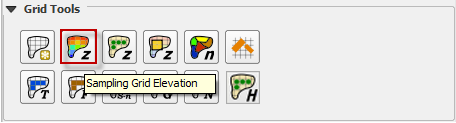
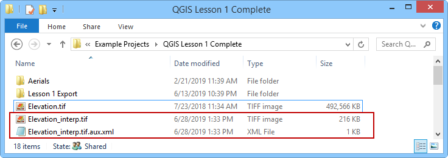

Sample Elevation Data from Raster¶
To interpolate the elevation to a grid layer from a raster layer, use the Sampling Grid Elevation from Raster Layer icon.
{kind=link}
Overview¶
A basic understanding of a raster file is necessary to use this routine. A raster file is a georeferenced image file with band data assigned to pixels aligned in column and row. In this case, the bands are elevation. Important properties:
The raster must have the same coordinate reference system (CRS) as the project. If the CRS is missing or is set by the user, save the raster with the correct CRS.
The best resolution of the grid element elevation is achieved when the elevation raster pixel size is smaller than the grid element size.
The raster warp method uses a weighted average to warp the original raster pixels to the cell size pixels.
Sample Elevation¶
Click the Sampling Grid Elevation Button and enter the required data in the dialog fields. As shown below, when the elevation sample is complete, the Sampling Done dialog box will appear. Select the Fill NODATA option to set the elevation of empty grid elements from neighbors.
{kind=link}
When the interpolation process is complete, the filename_interp.tif raster will be created in the project directory. This is the warped and realigned raster that was used to sample the elevation. It can be imported into the project at any time for review purposes.
The NODATA value in the previous dialog box is applied to the interp.tif raster.
{kind=link}
Troubleshooting¶
If the project or the data is on a server, this function may fail. Ensure all data is on the workstation.
If the raster has the wrong CRS or does not have complete coverage, the following message will be displayed. Save the raster with the correct CRS and make sure it has complete coverage.
{kind=link}
If the “Sample Done” box is displayed but the grid table still has -9999 as the elevation, the raster CRS is not being read correctly. Save the raster as a new layer and assign the correct CRS.
If the grid layer elevation data does not seem accurate, review the origin vs layer extent. If the layer extent is offset from the origin, the raster realign will be inaccurate. Re-create the raster so that the origin and extent are not offset.